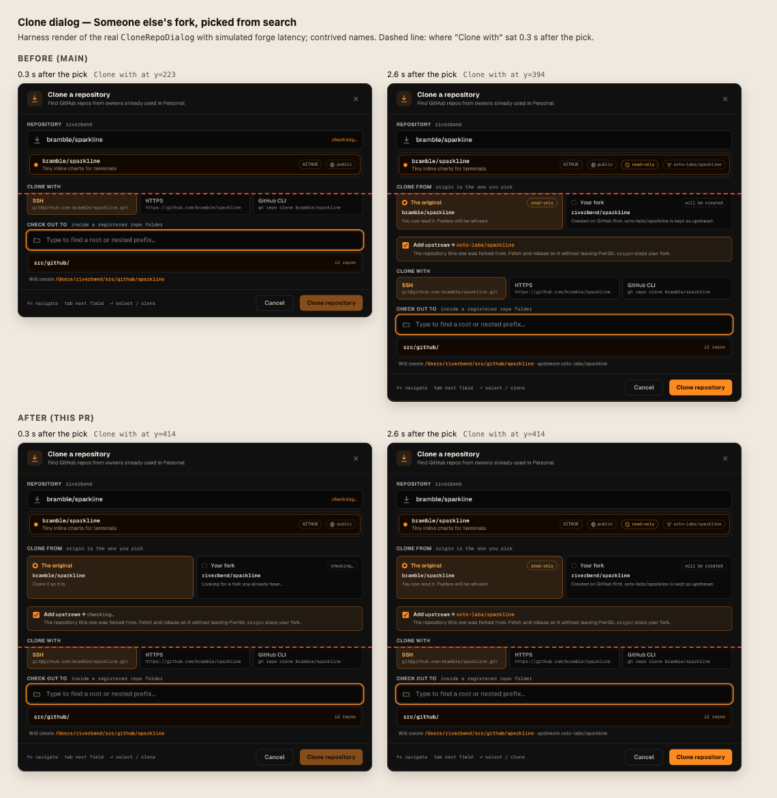

Picking a repository moves focus to Check out to. The rows that depend on the forge — the Clone from pair, Add upstream, Fork into — are inserted above it when the answers land, 0.6–2 s later, and push Clone with, Check out to and the Clone button down. Measured on a harness build of the real dialog at 1280×900 with simulated latency (gh api ~700 ms, accounts ~600 ms, preflight ~1300 ms). Names are contrived: octo-labs/sparkline is the original, bramble/sparkline someone else’s fork of it, riverbend the signed-in account, lumen-co an org.
upstream → octo-labs/sparklineThe repository this one was forked from. Fetch and rebase on it without leaving PwrGit.offersCloneFrom needs your accounts to rule out your own repository, and repo:forkTargets was asked only once a row was picked. +106 px at 0.65 s for every repository you don’t own. On main before #476 too.
gh search repos has no parent, so the upstream row from #476 waits for a lineage read. +66 px at 1.05 s. Search does report isFork; it was never asked for.
When it finds a fork you already have, Fork into appears under the cards (+24 px at ~2 s) for anyone with an org.
The original card’s push chip is taller than its line and drops the slug 8 px. Source-row chips slide sideways when the lineage lands.
House rule in play: controls must not move under the pointer (pwrgit-control-affordance-rules).
Each drawn at the pick’s frame for the hardest case, someone else’s fork from search. The question for each: what can still move after the click, and what does it cost the common case?
The answer is 0, 66, 104, 170 or more px tall (nothing, upstream, pair, both, a fork of a fork’s choices). One fixed height is wrong for most of them. Sized for the pair, your own non-fork repository keeps a 104 px hole or collapses it late; sized for the max, every clone wears 170 px of placeholder.
upstream → octo-labs/sparklineThe repository this one was forked from. Fetch and rebase on it without leaving PwrGit.Clone with and Check out to stay put; the late rows push Will create and the footer instead, so the Clone button moves just as it enables. It also puts the decision about what origin is below the protocol URLs and path it changes.
Nothing moves that you could already use, but every pick waits up to 1.5 s before you can choose a folder, the sections you saw before the pick disappear, and an answer slower than the cap still inserts rows. Preflight alone takes ~1.3 s.
upstream → checking…The repository this one was forked from. Fetch and rebase on it without leaving PwrGit.Ask for your accounts once the box starts asking the forge (one call per instance, never on open), so the pair is decided before a row can be clicked. Ask gh search for isFork, so a fork draws its upstream row at the pick with the target reading checking…. Only text changes after the click. Fork into moves onto the label line (dashed: held hidden).
The rules that already hold stay: Clone waits for the lineage (lineageKnown), the upstream row defaults on, and creating a repository is never a default. Each pair below is the same pick before and after the forge answered; Clone with sits at the same height in both.
upstream → checking…The repository this one was forked from. Fetch and rebase on it without leaving PwrGit.upstream → octo-labs/sparklineThe repository this one was forked from. Fetch and rebase on it without leaving PwrGit.upstream → checking…The repository this one was forked from. Fetch and rebase on it without leaving PwrGit.upstream → octo-labs/sparklineThe repository this one was forked from. Fetch and rebase on it without leaving PwrGit.Held hidden on the line while the original is chosen, so neither a click on the fork card nor preflight switching to it adds a row. The label line is always as tall as the pills (17 px), so accounts that land late don’t grow it either. Each card’s sentence holds two lines, because the fork card’s changes when preflight answers and a long slug wraps it. Before the accounts are known, a repository the forge says you can’t push to still gets the pair at the pick: no account’s own repository refuses its pushes.
Late = Clone with, Check out to or the Clone button moved more than 100 ms after the click (rAF sampler). CLS is Chrome’s layout-shift score after the pick, excluding shifts within 500 ms of input. *The remaining 0.0004–0.0008 is chips sliding sideways inside the picked source row; nothing below the source moves. Still moving, and not measured here: a fork of a fork’s parent-or-root choice appears when the lineage lands.
CloneRepoDialog against a fake bridgeviewerCanPush: false draws the pair0